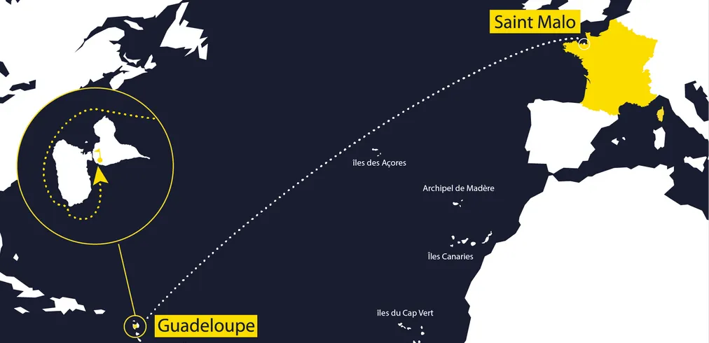

Le Vendée Globe est une course à la voile en monocoque. Les skippers font le tour du monde en solitaire, sans escales et sans assistances. Ils partent des Sables-d'Olonne en Vendée et font le tour du monde d'Ouest en Est en passant par les lieux mytiques : Cap Bonne Espérence, Cap Horn. Durant le tour du monde, ils sont confrontés aux différentes difficultés naturelles, les tempêtes, le changement de climat, la mer agitée, la houle. En cas de panne ou de problèmes, les skippers ne peuvent pas metttre pied à Terre pour réparer leur bateau, ils doivent se débrouiller avec les moyens du bord en pleine mer. Le Vendée Globe est la compétition la plus longue, environ 3 mois. Le record est actuellement tenu par Armel le Cléac'h en 74 jours et 19 heures. Par ses difficultés cette course est considérée comme la course la plus difficile, c'est pourquoi on l'appelle aussi "l'Everest des mers".
La Route du Rhum est une transatlantique en solitaire créée en 1978 et qui a lieu tous les 4 ans.
Les skippers participant à la course partent de Saint-Malo en Bretagne et traversent l'Atlantique pour arriver à Pointe-à-Pitre en Guadeloupe
ce qui représente une trajectoire de 3542 miles nautiques (6560 km).
Le record de 6 jours et 19 heures a été remporté lors de la 12ème édition en 2022 par le skipper français Charles Chaudrelier.
Voici le Parcours de la Route du Rhum :

La Transat Jaques Vabre est une course à la voile en binôme qui es aussi nommée la Route du Café. Elle se déroule entre Le Havre et l'Amérique du Sud.
Le port d'arrivée a changé plusieurs fois. Entre 2001 et 2007, les skippers ont franchi la ligne d'arrivée à Salvador de Bahia au Brésil pour rendre hommage au commerce maritime du café.
Depuis peu, l'arrivée se fait dans la baie de Fort de France en Martinique.
Les skippers concourent dans différentes catégories en fonction de leurs types de bateau.
La Solitaire du Figaro est une compétition de voile en solitaire qui a lieu tous les ans depuis 1973. La course est organisée sur plusieurs étapes de quatre jours, elle se commence et se termine généralement à La Rochelle. Les bateaux participants doivent naviguer seuls ou en équipe pour parcourir plus de 3 000 milles nautiques avec des escales. La Solitaire du Figaro est l'une des courses les plus populaires et les plus prestigieuses en France. La course est divisée en 4 étapes distinctes, qui se déroulent en juin et en juillet, et la compétition est très intense. Les concurrents sont évalués sur la base d'une combinaison de leur performance sur le terrain, de leur connaissance de la navigation et de la météo. La réussite à la Solitaire du Figaro dépend donc beaucoup de la stratégie et des compétences des marins.
{kind=link}